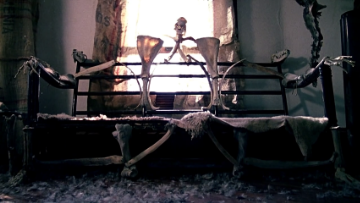

I USED TO TALK TO FURNITURE
I grew up in an area where the properties are so large and the families are so wealthy, that they build mansions and walls inclosing themselves in their own private paradises - never interacting with their neighbors unless by some strange coincidence. I was home-schooled until the age of 7, which is where this story ends.
But first, it begins at age 4, when I can first remember what my childhood was like. As a young boy, I thought that staying isolated on your family’s property was what all little boys did. Whenever one of my parents would go out I’d ask to join, but they’d shake their heads explaining that only adults left home and only in very very dire emergencies. Aside from this, I never wanted for toys or activities and developed what my parents described as a wild imagination. I began to creating relationships with our household furniture, spending days conversing with them and naming each and every one.
My parents seemed to indulge my imagination more and more increasing the amount of furniture in the house dramatically. My father had always considered himself somewhat of a handyman and often explained to me his love of constructing things and how he had hand-crafted certain pieces.
And so 3 years ensued of deep emotional relationships I developed with the furniture in my home. Arnold was the soft sofa in the living room that seemed to move up and down as I’d recline on him reading my books. Sophia was my bed that shifted ever so slightly rocking me back and forth as I fell asleep, sometimes I could even hear her humming softly. When I’d lay my head on the table in my room, Claudio, I could hear palpitations in rhythm to my heartbeat. I constantly spoke with Theodore, a rather small chair that was very responsive to me, making humming sounds and strange vibrations even when unprompted. But above all I loved Gladys, the largest, softest couch in the home - the one who seemed to share my breath. All the furniture felt so soft, so warm, and so alive to me.
It’s strange how fast things can change. It was a Monday, my 7th birthday & my parents were in their workshop constructing a new piece of furniture as my present. A woman had gotten lost driving through the town and although our gates were sealed shut she had managed to push her way through. She knocked on the door lightly and I jumped up, having never heard someone approach the house before. When I opened the door her expression changed to horror. She sniffed the air and gagged. Then she picked me up and began to run.
Tomorrow I turn 27 and I’ve been rolling over in my mind if I should sit in the gallery while my parents are executed. The headlines had labeled them ‘worse than Karl Brandt,’ having reconfigured 167 people by my 7th birthday. They were never branded murderers because no one died, but it was much worse than that. 167 people to make 71 pieces of furniture, that’s 664 limbs reassembled in formations no mind should conjure. Sometimes people think I’m a Buddhist … there is no furniture in my apartment.
Both my parents were surgeons and I used to talk to furniture.

(Recuerda que las respuestas deben escribirse en ingles)
Enviar
Regresar